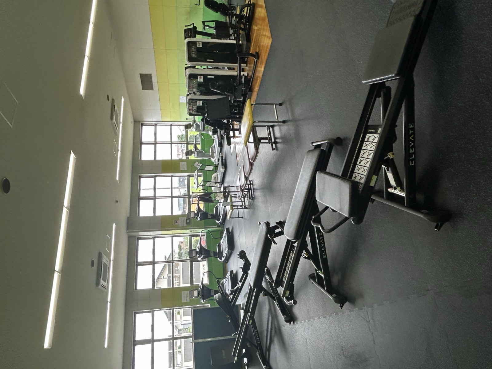

「今の自分」を可視化
体組成計での測定結果をもとに、データに基づいた目標設定をお手伝いします。数字で見る自分のカラダは、モチベーションにもつながります。
美唄市 スポーツ・健康サポート
美唄市教育委員会 生涯学習課 スポーツ振興係 委託事業
美唄市教育委員会 生涯学習課 スポーツ振興係 委託事業
美唄市民の健やかな体づくりと、
あらゆる世代のスポーツ活動を
サポートする情報ポータルです。
CURRENT ACTIVITY
受付中まずはここから！
現在どなたでもご参加いただける
取り組みです
「なんとなく」の自己流トレーニング、
卒業しませんか？地域おこし協力隊 スポーツ振興プロジェクトが、
正しいトレーニングのやり方を無料でアドバイスします。

有酸素マシンや筋力トレーニング機器を備えた
体育館内のトレーニング室に、
地域おこし協力隊のスタッフが常駐しています。
体組成計での測定結果をもとに、データに基づいた目標設定をお手伝いします。数字で見る自分のカラダは、モチベーションにもつながります。
自己流になりがちなフォームを丁寧に指導。狙った筋肉にしっかり効かせるコツを、実際にマシンを使いながらお伝えします。
基礎の基礎から丁寧にお伝えします。運動経験がない方も、ブランクがある方も、マイペースで参加していただけます。
9:30 〜 12:00
15:30 〜 18:00
※日程は都合により変更・中止となる場合があります。最新情報は下記の「活動報告・お知らせ」をご確認ください。終了した日程はグレー表示となり、「過去の取り組み」に実績として記録されます。
いいえ、事前予約は不要です。常駐スケジュールの時間内であれば、どなたでもお気軽にお越しください。
サポート自体の参加費はモニター期間中無料です。ただし、体育館トレーニング室をご利用いただく際の施設使用料は別途必要となります。料金の詳細は体育館窓口にてご確認ください。
はい、可能です。トレーニングをせず、体組成計での測定のみのご利用も歓迎しています。まずは今のカラダを知ることから始めてみませんか。
動きやすい服装と室内用シューズをご用意ください。タオルや飲み物もあわせてお持ちいただくと安心です。
もちろんです。基礎の基礎から丁寧にご案内しますので、運動が初めての方も安心してご参加いただけます。
UPCOMING
地域おこし協力隊として、市民向けスポーツ教室や子ども向け野球指導・スポーツ能力測定（噂の最新機器）、各種健康イベントなどを順次企画しています。詳細が決まりましたら、このページでお知らせします！
基礎から学べる野球指導プログラムを企画中です！対象年齢や日程が決まりましたら、お知らせしますね。
投球・打球データなどを計測できる最新機器を使った測定会を検討しています。お楽しみに！
市民向けの健康セミナーや体力測定イベントなど、幅広い世代向けの企画を準備しています。
REPORT & NEWS
日程変更や実施報告など、最新情報はここで随時お伝えしていきます。
9月後半〜10月頭の常駐スケジュールを更新しました。皆様のお越しをお待ちしております。
今後は「今後の予定・新企画」や「活動報告」など、トレーニング室サポート以外の情報もあわせて発信していきます。
トレーニング室サポート事業の日程やよくある質問をご覧いただけます。
ARCHIVE
これまでに実施してきた常駐サポートや教室・イベントの実績です。地域おこし協力隊として、今後も同様の取り組みを続けていきます。
トレーニング室サポート実施（体組成測定 5名参加）
トレーニング室サポート実施（マシン利用指導 3名参加）
過去の実施実績はまだありません。
SNS
最新の常駐日程変更や新企画は、SNSでも発信していきます！

友だち追加で、日程のリマインドやお得な情報をいち早くお届けする予定です。
友だち追加準備中
活動の様子や測定風景など、写真を中心に発信予定です。
フォロー準備中CONTACT
実施場所・マップは「現在実施中の取り組み」セクション内でご確認いただけます。
美唄市教育委員会 生涯学習課 スポーツ振興係 越野
（美唄市役所内）
お問い合わせ時間：美唄市役所の開庁時間に準じます（平日 8:45〜17:15）
取り組み内容や最新スケジュールについてのご質問は、お気軽に越野までご連絡ください。
※常駐スケジュールの時間帯は、越野が総合体育館トレーニング室に常駐しています。